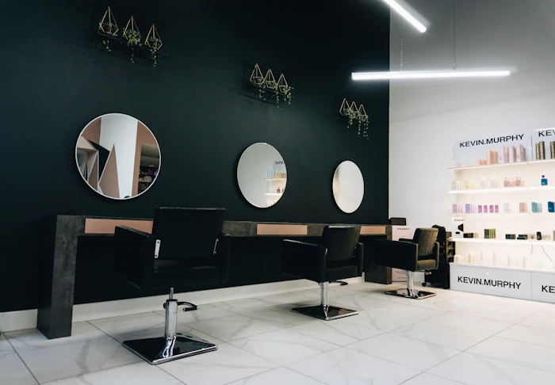
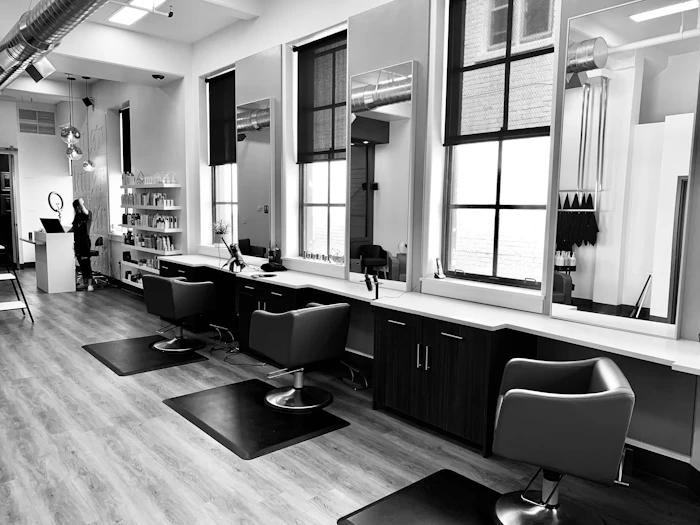

Home/Journal
The Stackly Journal
Notes on hair, skin, and going slower.
Scalp rituals, seasonal skin guides, and honest stories from behind the chair- written by the people who work it.

Editor's pickWhy we stopped rushing: a year of slow beauty at Stackly.
Twelve months ago we cut our daily bookings by a third. Here's what happened to the work, the guests, and the chairs themselves.
Read moreLatest notes
Read a little,
try a little.

The five-minute scalp ritual that changed my hair.
A stylist-approved routine you can do in the shower, twice a week, with things already in your bathroom.
Reading your skin before the season changes.
The three questions we ask every guest before recommending a single product- ask yourself the same.
What "warm" actually means when you ask for copper hair.
Colour language is confusing on purpose. Here's how our colourist translates it into something she can mix.
Twelve shades we're loving this monsoon.
Our seasonal palette, and the two colours that guests keep asking to see again once they're on.
Inside the Stackly Hour: a ritual, not a rush.
What actually happens during our ninety-minute signature service, chair by chair, step by step.
Bridal trials: when to book and what to bring.
A realistic timeline for trials, plus the three photos worth bringing to your first consultation.
No notes in this topic yet- check back soon.
Most read
What guests are
reading right now.
04 stories
Browse by topic
Find exactly
what moves you.
Six distinct areas, one honest journal- pick a thread and follow it.
From the editor
We write this journal the way we work in the chair- slowly, and only when there's something worth saying. Everything guests ask between the rinse and the blow-dry ends up here instead.
- 06current issue
- 7stories published
- Thunew notes land
Enjoyed the read?
Come try it
in the chair.
Words only go so far- our stylists take it from there. Six days a week, most same-day slots open up by 11am.